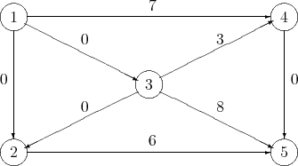

Second Exam, Friday, November 21, 2008.
You may use any result from your notes or a homework that is clearly stated. You may use one sheet of handwritten notes, but no other sources. The exam consists of five questions, and lasts one hundred and ten minutes.
The Wonder Waste disposal company has 5 truckloads of nuclear waste and 5 truckloads of hazardous chemical wastes that must be moved from its current cleanup site to nuclear and chemical disposal facilities, respectively. The following table shows that many of the available roads are restricted for one or the other type of waste.
| Road | |||
From | To | Nuclear OK | Chemical OK |
| Site | NDisp | Yes | No |
| Site | CDisp | Yes | Yes |
| Site | Inter | No | Yes |
| NDisp | CDisp | No | Yes |
| CDisp | Inter | Yes | No |
| Inter | NDisp | Yes | Yes |
Also Wonder Waste wants to distribute any risk by allowing no more than half the ten total truckloads on any road. One particular road, the link from crossing Inter to the nuclear disposal facility, is especially well suited to hazardous transfer because it runs through very remote areas. Wonder Waste seeks a feasible shipping plan that maximizes use of that road.
The linear programming problem
has a nondegenerate optimal solution where x1 and x2 are basic variables.
A transportation problem with three supply nodes and four demand nodes has supplies, demands, and arc costs as indicated below:
Find a basic feasible solution using the Northwest Corner Rule. What are the values of the basic variables in your bfs?
A transportation problem with three supply nodes and four demand nodes has tableau
The large numbers give the costs of the arcs and the superscripts indicate a flow.
Let G = (V,A) be the following directed graph, where the label on each edge gives the flow on that edge. Nodes 1, 2, and 3 are supply nodes, with supplies of 7, 6, and 11, respectively. Nodes 4 and 5 are demand nodes, with demands of 10 and 14, respectively. The objective is the usual one of meeting the demand requirements at minimum cost. There are no capacity restrictions on the arcs. The linear programming formulation can be written compactly as
where cij is the cost of shipping one unit along arc (i,j) and bi is the net supply at node i. Thus, bi ≥ 0 for nodes 1, 2, and 3, and negative for the remaining nodes.
The given flow is optimal, with the basic variables corresponding to arcs (1, 4), (3, 4), (3, 5), and (2, 5). The optimal dual solution is y1 = 8, y2 = 7, y3 = 5, y4 = 3, and y5 = 0.
